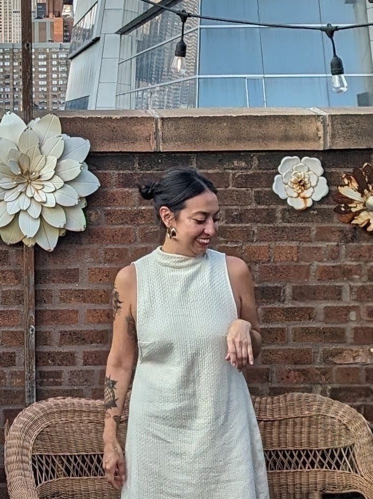

I run Pigeon Florals out of Leesburg, Virginia, and I travel. I've designed in New York City, the Hamptons, Nantucket, Connecticut, Miami, and Georgia, and I'm home base for weddings and events across DC, Maryland, and Virginia.
I've been in the event industry for fifteen-plus years. I've assisted planners, worked catering, worked at a winery, and done just about every job there is on the day of. Then I fell in love with the flowers and never looked back.
I like color. I like flowers that look like they might move. I like a room that makes people stop talking for a second when they walk in.
Hablo español, so if that's easier for you or your family, we can plan the whole thing that way.
Let's talkFull design from the first call to the last candle. Bouquets, ceremony, tables, installs.
Smaller day? Pick the pieces you want and order straight from the site.
Seasonal stems from nearby growers first, with a few imports when the design calls for it.